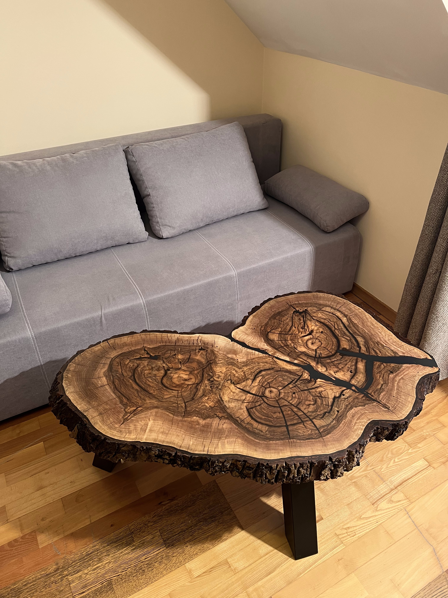

Galeria projektów



Specjalizuję się w łączeniu logistyki z nowoczesnymi technologiami. Moje projekty wykorzystują AI do automatyzacji procesów i optymalizacji workflow.
• AI dla początkujących (Udemy)
• Grafika komputerowa w praktyce (Coursera)
• Zarządzanie logistyczne (LinkedIn Learning)

Technologie AI pozwalają przekształcać zwykłe projekty w profesjonalne realizacje. Dzięki algorytmom machine learning optymalizuję czas pracy nawet o 70%.